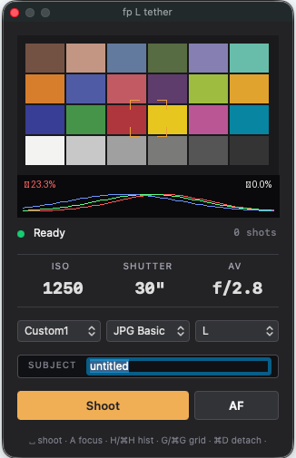
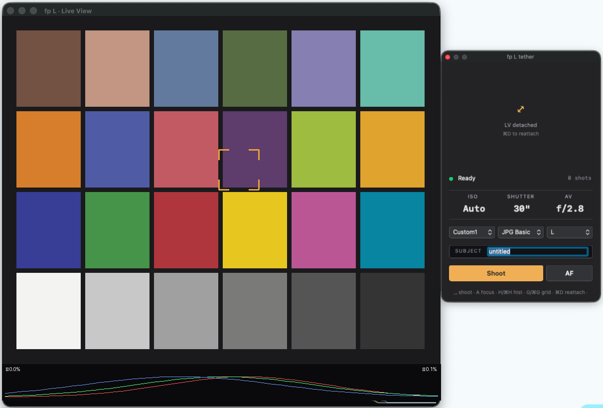

Open-source tethered shooting for the Sigma fp L on macOS
Sigma fp L のテザー撮影を macOS で動かすオープンソース実装
fp-l-tether is a self-contained tethering daemon and floating
control panel for the Sigma fp L on macOS. Shots land directly in Lightroom
Classic via Auto Import. Used daily by the author for studio product and
art-repro photography.
⌘D) — pop Live View into a
resizable 3:2 window for art-repro or iPad-via-Sidecar workflows⌘,) — change watch folder,
filename pattern, and Lightroom mode without editing TOML

git clone https://github.com/iochan-ship-it/fp-l-tether.git
cd fp-l-tether
python3 -m venv venv
source venv/bin/activate
pip install -e .Connect the Sigma fp L in Camera Control USB mode, then:
# Kill macOS's built-in PTP daemon first
sudo killall ptpcamerad
# Launch the daemon + floating panel
sudo venv/bin/fp-l-tether start
sudo is required because libusb has to detach the kernel driver
from the camera's PTP interface. See docs/SETUP
for the full permission model.
| Feature | Status |
|---|---|
| Capture (single shot, PC-triggered) | ✅ Works |
| Capture (camera-button-triggered) | ✅ Works |
| Live View (10 fps) | ✅ Works |
| Click-to-AF on Live View | ✅ Works |
| ISO / SS / Av / WB / Format / Resolution control | ✅ Works |
| Lightroom Auto Import | ✅ Works |
| Auto USB recovery from wedge | ✅ Works (~4 s) |
| Settings preservation across reconnects | ✅ Works |
| Detachable LV window + Sidecar (iPad as display) | ✅ Works |
| Burst / continuous capture | ⚠️ Single shot only — continuous on roadmap |
| Video / movie tether | ❌ Not supported, no plans |
| Linux / Windows | ❌ macOS only (IOKit-dependent recovery) |
The Sigma fp L is a remarkable little camera that deserves a great tethered shooting experience. This is a community-built option for photographers who want their fp L shots to land directly in Lightroom Classic and who enjoy customizing their tools.
This work would not have been possible without: